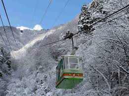
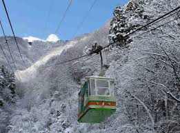
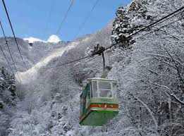

弥彦のおすすめスポット
弥彦山
●グリーンシーズン（春～秋）ロープウェイ：3月下旬～11月下旬
標高634m、越後平野や日本海、佐渡島までを一望できる絶景の山「弥彦山」。グリーンシーズンは、弥彦神社参拝や、ロープウェイでの空中散歩、山頂からの大パノラマが訪れる人を魅了します。自然の中で静けさとリフレッシュを味わいたい方にぴったりです。
【主なスポット・体験】
弥彦神社：歴史ある越後一宮、パワースポットとしても人気
弥彦山ロープウェイ：山頂まで約5分、眼下に広がる海と田園風景
弥彦山頂公園：展望台やカフェ、恋人たちの鐘なども設置
ハイキングコース：自然観察や森林浴にぴったりな登山道も複数あり
秋は紅葉スポットとしても有名！弥彦公園のもみじ谷が絶景

●ウィンターシーズン（冬）観光は通年可
雪化粧した弥彦神社や弥彦公園の幻想的な風景が楽しめます。初詣や冬のライトアップイベント、雪景色の中でいただく温泉も格別。しんとした冬の空気が心を静めてくれます。
【主な特徴】
弥彦神社は新潟有数の初詣スポット（元旦は夜間も参拝可能）
雪化粧した参道や社殿が神秘的
弥彦温泉街：冷えた体を温める天然温泉が楽しめる
冬の夜はライトアップも開催される年もあり
ロープウェイは冬期運休（※ただし年末年始の特別運行あり）
所在地
弥彦村弥彦
電話
0256-94-3154（弥彦観光協会）
弥彦観光協会公式サイト
 
